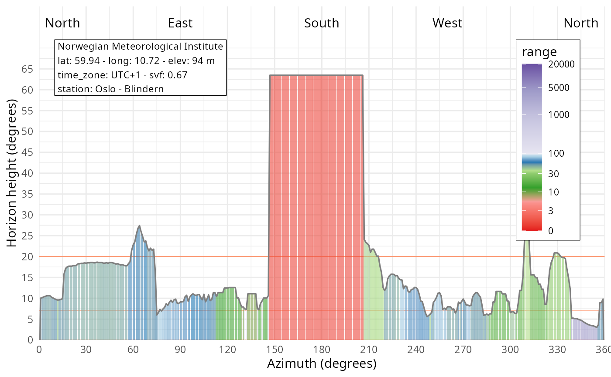

Plot max horizon and range from the station
Source:R/plot_station_horizon_range.R
plot_station_horizon_range.RdPlot maximum horizon and its range based on the local terrain model, the local surface model and the regional digital terrain model with infos from the weather station.
Examples
# Load the station metadata and location
stn <- get_metadata_frost(stationid = 18700, path = "plot/horizon")
#> [1] " "
#> [1] "-------------------------------------------"
#> [1] "station MET.NO: 18700 -- OSLO - BLINDERN -- Fast_IP: 10.240.10.11:6785"
#> [2] "station MET.NO: 18700 -- OSLO - BLINDERN -- Fast_IP: 10.240.10.11:6785"
#> [3] "station MET.NO: 18700 -- OSLO - BLINDERN -- WMO: 0-20000-0-01492"
#> [4] "station MET.NO: 18700 -- OSLO - BLINDERN -- WIGOS: 0-20000-0-01492"
#> [1] "-------------------------------------------"
#> [1] " "
# Plot sun diagram and save
plot_station_horizon_range(stn)
#> [1] "Process: 18700 - 260966.8/6652718.0 - dtm - 100/1 - path: data/dem"
#> [1] "Load demo file: data/dem/18700_dtm_25833_d00100m_1.0m.tif"
#> [1] "Process: 18700 - 260966.8/6652718.0 - dom - 100/1 - path: data/dem"
#> [1] "Load demo file: data/dem/18700_dom_25833_d00100m_1.0m.tif"
#> [1] "Process: 18700 - 260966.8/6652718.0 - dtm - 20000/20 - path: data/dem"
#> [1] "Load demo file: data/dem/18700_dtm_25833_d20000m_20.0m.tif"
#> Over-riding projection check
#> Importing raster map <elev>...
#> 0% 3% 6% 9% 12% 15% 18% 21% 24% 27% 30% 33% 36% 39% 42% 45% 48% 51% 54% 57% 60% 63% 66% 69% 72% 75% 78% 81% 84% 87% 90% 93% 96% 99% 100%
#> SpatRaster read into GRASS using r.in.gdal from memory
#> Over-riding projection check
#> Importing raster map <elev>...
#> 0% 3% 6% 9% 12% 15% 18% 21% 24% 27% 30% 33% 36% 39% 42% 45% 48% 51% 54% 57% 60% 63% 66% 69% 72% 75% 78% 81% 84% 87% 90% 93% 96% 99% 100%
#> SpatRaster read into GRASS using r.in.gdal from memory
#> Over-riding projection check
#> Importing raster map <elev>...
#> 0% 3% 6% 9% 12% 15% 18% 21% 24% 27% 30% 33% 36% 39% 42% 45% 48% 51% 54% 57% 60% 63% 66% 69% 72% 75% 78% 81% 84% 87% 90% 93% 96% 99% 100%
#> SpatRaster read into GRASS using r.in.gdal from memory
